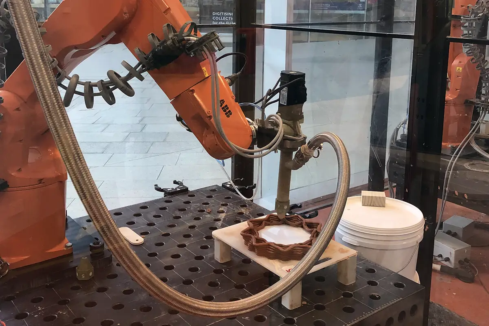
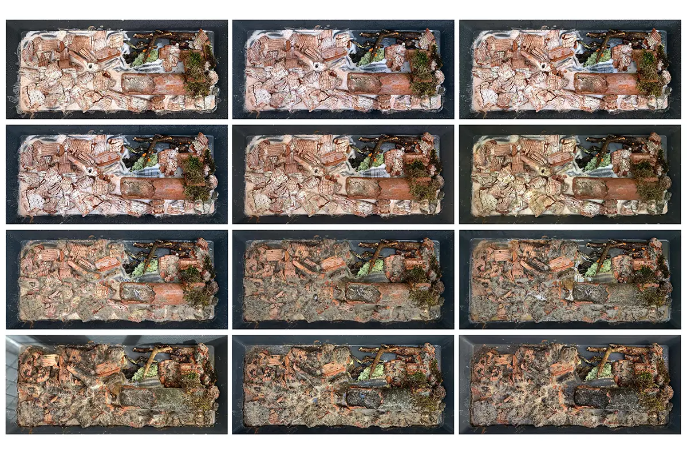

Coursework - University of Melbourne 2022
Location: Melbourne, Australia
Team: James Urlini, Pearl Thompson
Supervisor: Prof. Rochus Hinkel
3D Printing Digital FabricationThe course „Made by Robots“ was all about using robotic clay printing to create habitats for urban wildlife. A specific plot in the outskirts of Melbourne was choosen to locate the project. In an initial analysis, we identified endangered species in this specific urban ecological system, which are mostly birds and frogs. We choose to build a feeding station for them- meaning to create the optimum conditions for funghi and mosses to grow. Once funghi and mosses are populated, smaller animals like slugs, spiders and ants will follow. These animals then are serving as food for the endangered frog and bird populations. To create the design, we did several experiments on how to grow mosses and funghi in combination with clay printing.
We identified the perfect conditions regarding geometry, humidity and sunlight. Based on that, we developed modular clay elements, each serving a specific function for growing fungi, mosses, and transporting moisture and light. For that, four different kinds of prints are produced: Bottom Pieces, Top Pieces, Regular Pieces and Connectors. While Connectors and Regular Pieces can be connected with two other prints, Bottom- and Top Pieces can only connect to one other element. The result are modular pieces, that can be freely assembled to towers, with internal properties to match the local requirements. Three of these towers have been assembled on the chosen site and are currently populated by fungi and mosses. The project will be exhibited at Melbourne Design Week 2023.